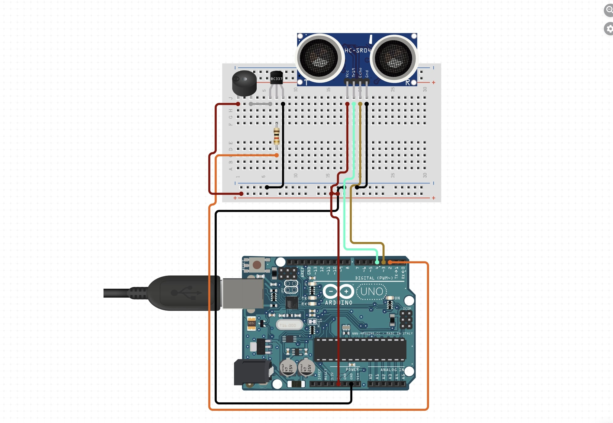
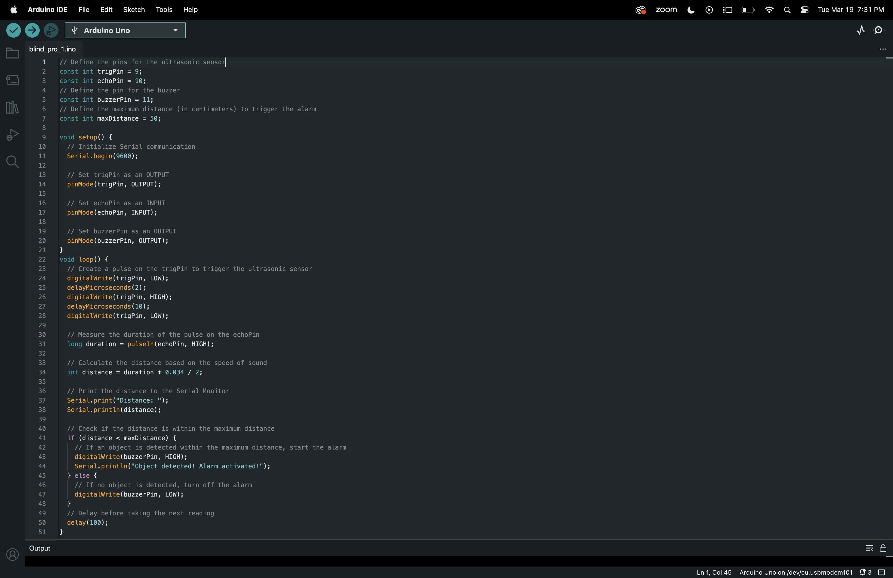
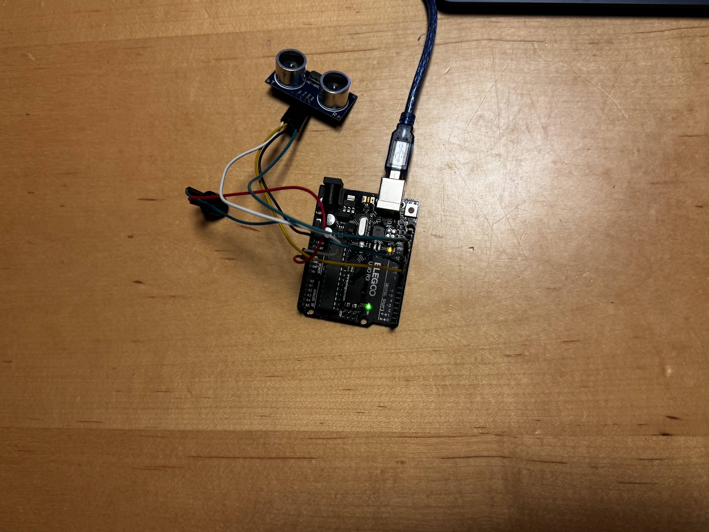

WEEK
4
Ultrasonic Sensor-Based Alarm System for Blind Navigation
Our project utilizes an Arduino microcontroller, an ultrasonic sensor, and a buzzer to create an effective obstacle detection and alarm system.The ultrasonic sensor detects objects within a certain range, triggering the buzzer to emit an audible alarm when an obstacle is detected. This system aims to assist blind individuals in navigating their surroundings safely by providing real-time feedback about obstacles, enhancing their independence and mobility. With potential future developments such as integration into assistive devices and customization options, this technology holds promise for improving the lives of blind individuals and fostering inclusivity in our communities.

Introduction and Process:
Blindness or visual impairment presents significant challenges in navigation and obstacle avoidance for individuals. In response, technologies leveraging ultrasonic sensors and audible alarms have been developed to assist blind individuals in navigating their surroundings safely. This project aims to create a simple yet effective ultrasonic sensor-based alarm system using Arduino, with potential future implications for aiding blind people in navigation.
Project Description:
The project utilizes an Arduino microcontroller connected to an ultrasonic sensor and a buzzer. The ultrasonic sensor detects objects within a certain range, and when an object is detected, the buzzer emits an audible alarm, alerting the user to the presence of obstacles.
Components:
Arduino Uno or similar microcontroller board Ultrasonic sensor (e.g., HC-SR04) Buzzer Connecting wires Breadboard (optional)
Circuit Setup:
Ensure you connect the components according to the diagram: Connect the VCC pin of the ultrasonic sensor to the 5V pin of the Arduino. Connect the GND pin of the ultrasonic sensor to the GND pin of the Arduino. Connect the Trig pin of the ultrasonic sensor to pin 9 on the Arduino. Connect the Echo pin of the ultrasonic sensor to pin 10 on the Arduino. Connect the Anode (longer leg) of the buzzer to pin 11 on the Arduino. Connect the Cathode (shorter leg) of the buzzer to the GND pin of the Arduino.
Circuit Diagram
Code
 Functionality:
The ultrasonic sensor emits ultrasonic waves and measures the time taken for the waves to bounce back. Based on the measured time, the Arduino calculates the distance to the object in front of it. If the distance is below a predefined threshold (e.g., 50 cm), indicating the presence of an obstacle, the buzzer is activated, emitting an audible alarm. The alarm stops when the obstacle is no longer detected.
working model
Role of Technology in Assisting Blind Navigation:
Ultrasonic Sensors:
Ultrasonic sensors emit high-frequency sound waves and measure the time it takes for them to bounce back, providing accurate distance measurements.
Audible Alarms:
Audible alarms, such as buzzers or speakers, provide real-time feedback to blind individuals about the presence of obstacles in their surroundings.
Integration with Assistive Devices:
Integrating sensor-based alarm systems into canes, wearable devices, or smartphone applications can enhance their usability and effectiveness for blind individuals.
Potential Future Developments:
Machine Learning Integration:
Advanced algorithms could be implemented to analyze sensor data and predict potential obstacles or hazards, providing more proactive assistance to blind individuals.
Haptic Feedback:
In addition to audible alarms, haptic feedback mechanisms such as vibrating motors could be incorporated into assistive devices to provide tactile feedback about obstacles.
Localization and Mapping:
Integration with GPS technology and indoor mapping systems could enable blind individuals to navigate complex environments more efficiently and accurately.
User Interface Customization:
Offering customizable settings for alarm tones, sensitivity levels, and feedback preferences allows users to tailor the system to their individual needs and preferences.
Conclusion:
By leveraging ultrasonic sensor-based alarm systems and integrating them into assistive devices, we can empower blind individuals to navigate their surroundings safely and independently. With ongoing innovation and collaboration, these technologies have the potential to significantly enhance the quality of life and autonomy of blind individuals, fostering a more inclusive and accessible society for all.